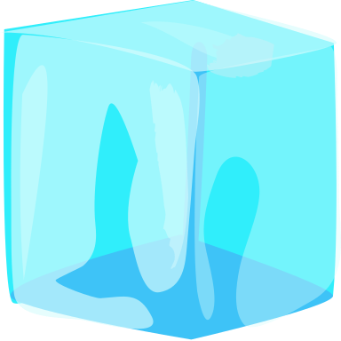

Science 10 (Physics Lesson )
What are Units?
A unit is a standard of comparison for measurements.

- To measure the length of an object, we compare its length to the markings on a ruler.
- For the measurement to make sense to others, we need to use a standardized distance between markings such as centimetres or inches.
- The definition of each unit is arbitrary.
Fundamental Units
Scientists have agreed that the official unit for measuring distances will be the metre, \({\mathrm m}\).
- A metre is officially defined as a certain number of wavelengths of a certain colour of light.
The Système Internationale uses seven fundamental units (also called base units) upon which all other units are based.
| Quantity | SI Unit | Symbol |
|---|
| Distance | metre | \({\mathrm m}\) |
| Electric Current | ampere | \({\mathrm A}\) |
| Time | second | \({\mathrm s}\) |
| Temperature | kelvin | \({\mathrm K}\) |
| Mass | kilogram | \(\mathrm {kg}\) |
| Amount of Substance | mole | \(\mathrm {mol}\) |
| Light Intensity | candela | \(\mathrm {cd}\) |
Derived Units
Fundamental units can be combined to make new units. These are known as derived units.
- To measure velocity, we use \(\mathrm{m/s}\).
- To measure density, we use \(\mathrm{kg/m^3}\).

Sometimes derived units are given their own name and symbol.

- The SI unit of force is called the newton:
$$\mathrm{N = kg \cdot \left(m\over s\right)^2}$$
- Other derived units with names include: joule, watt, pascal, volt.
SI Prefixes
When an SI unit is too small to be practical, we can use prefixes to create larger units.
- SI prefixes always change the size of units based on powers of 10.
- This is much simpler than having to remember 12 inches in a foot, 3 feet in a yard, and 1760 yards in a mile.
| Prefix Name | Value | Symbol |
|---|
| tera | \(10^{12}\) | \(\mathrm T\) |
| giga | \(10^{9}\) | \(\mathrm G\) |
| mega | \(10^{6}\) | \(\mathrm M\) |
| kilo | \(10^{3}\) | \(\mathrm k\) |
| hecto | \(10^{2}\) | \(\mathrm h\) |
| deca | \(10^{1}\) | \(\mathrm {da}\) |
There are also prefixes for making smaller units...
| Prefix Name | Value | Symbol |
|---|
| deci | \(10^{-1}\) | \(\mathrm d\) |
| centi | \(10^{-2}\) | \(\mathrm c\) |
| milli | \(10^{-3}\) | \(\mathrm m\) |
| micro | \(10^{-6}\) | \(\mathrm \mu\) |
| nano | \(10^{-9}\) | \(\mathrm n\) |
| pico | \(10^{-12}\) | \(\mathrm p\) |
The standard unit means a fundamental or derived unit without a prefix.
- The exception to this is kilograms!
Unit Conversions
We can always convert units by substituting an equivalent unit.
If \(x = 5\), then:$$\begin{align}y &= 3\color{red}{x}-4\\ &= 3\color{red}{(5)}-4\\ &= 11\end{align}$$
- Substitution works with units the same as it does for variables:
Unit Conversions
Example 1: Convert \(\mathrm{25.0\ \mu m}\) to \(\mathrm m\).
We know that \(\mathrm{\mu m = 10^{-6}\ m}\):
$$\begin{align}\mathrm{25.0\ \color{red}{\mu m}} &= \mathrm{25.0\ \color{red}{(10^{-6}\ m)}} \\ &= \mathrm{2.50\times 10^{-5}\ m}\end{align}$$
Unit Conversions
Example 2: Convert \(\mathrm{5.00\times 10^{-7} s}\) to \(\mathrm {ns}\).
- \(\mathrm{ns = 10^{-9}\ s}\)
- \(\mathrm{s = 10^{9}\ ns}\)
$$\begin{align}\mathrm{5.00\times 10^{-7} \color{red}{s}} &= \mathrm{5.00\times 10^{-7} \color{red}{(10^{9}\ ns)}} \\
&= \mathrm{5.00\times 10^2\ ns}\end{align}$$
- Reverse the sign of the exponent when inserting a prefix rather than removing it.
Unit Conversions
Example 3: Convert \(\mathrm{1.50\ mW/cm^2}\) to \(\mathrm{W/m^2}\).
- \(\mathrm{mW = 10^{-3}\ W}\)
- \(\mathrm{cm = 10^{-2}\ m}\)
$$\begin{align}\mathrm{1.50\ \color{red}{mW}/\color{green}{cm}^2} &= \mathrm{1.50\ \color{red}{(10^{-3}\ W)}/\color{green}{(10^{-2}\ m)}^2}\\
&= \mathrm{15.0\ W/m^2} \end{align}$$
Unit Conversions
Example 4: Convert \(\mathrm{80.0\ km/h}\) to \(\mathrm{m/s}\).
- \(\mathrm{km = 10^3\ m}\)
- \(\mathrm{h = 3600\ s}\)
$$\begin{align}\mathrm{80.0\ \color{red}{km}/\color{green}{h}} &= \mathrm{80.0\ \color{red}{(10^3\ m)}/ \color{green}{(3600\ s)}} \\
&= \mathrm{22.2\ m/s}\end{align}$$
- A shortcut for converting km/h to m/s is to divide by 3.6.